Layout 2: round 8 and the build
River Valley 4242 at 128×128, the High look, at 1920×1080 and 2560×1440: the design to build. The Map Generator button opens the 352px map generation panel. On the map: the Show toggles as checkbox rows at the top left, Legend last, its full legend under them when ticked; the water controls in one row at the top middle; the camera group, the height slice, Slow forces and the sound at the top right; the objects as a menu at the bottom right, always shown, one per row with no headings; the minimap, the coordinates and the readout at the bottom left; one bar at the bottom middle with the held tool's settings above it on the bar's cells. Click a picture for full size. What doesn't fit is listed in DESIGN.md, "Layout 2 mockups". Built (2026-10-03): each mockup now has the build beside it, the same map and state; the map's name is the one M9b gives it (Standing Stone), and the legend shows the objects with the objects menu's pictures at one row height. DESIGN.md, "Layout 2 as built", says what the mockups left open.
1. The panel open, Select in hand

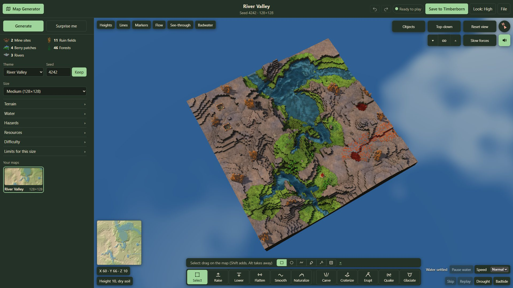

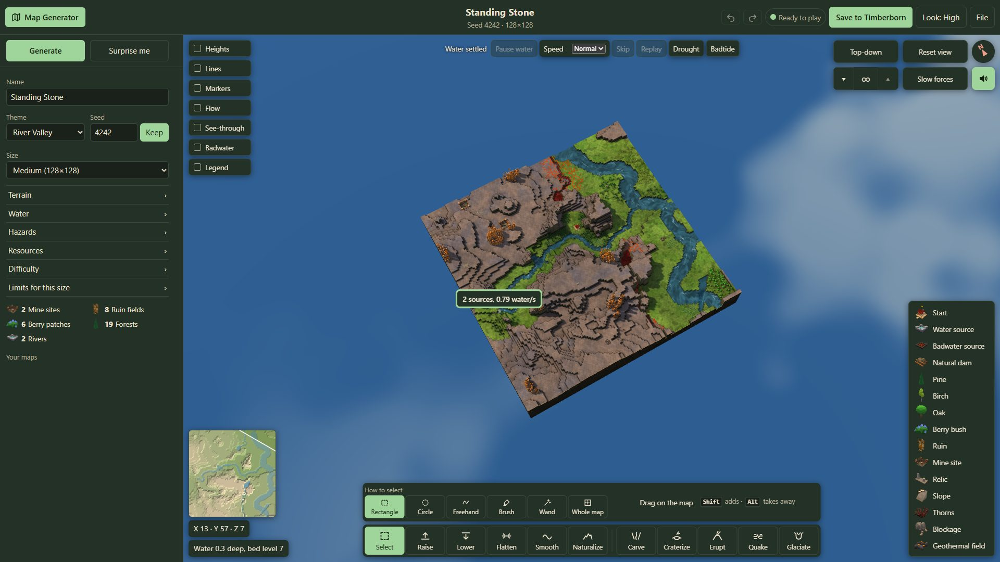

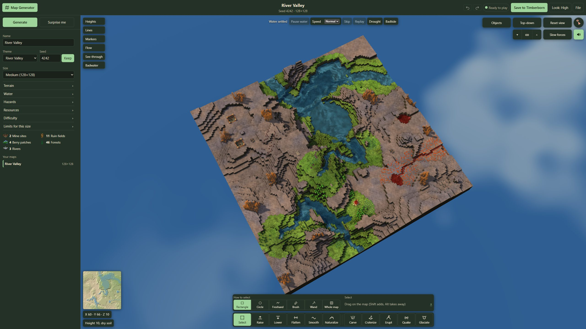

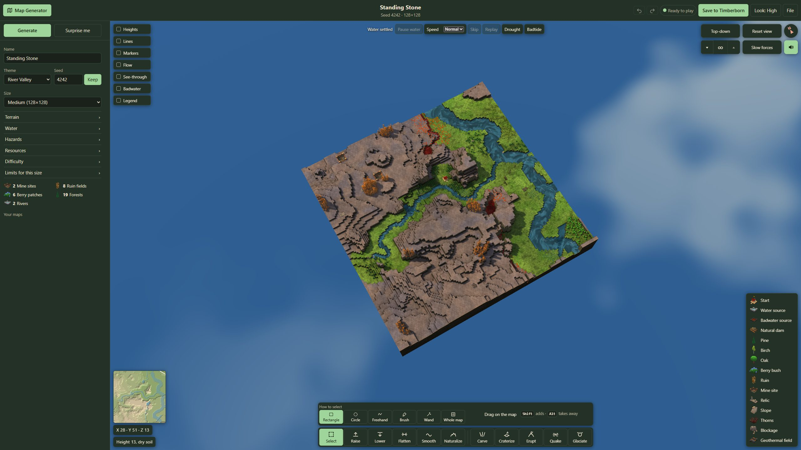
2. Water source picked: its row lit

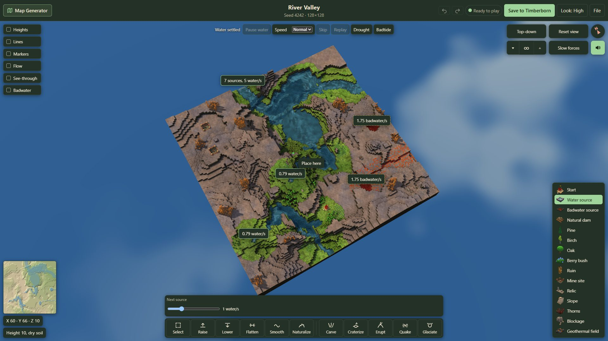

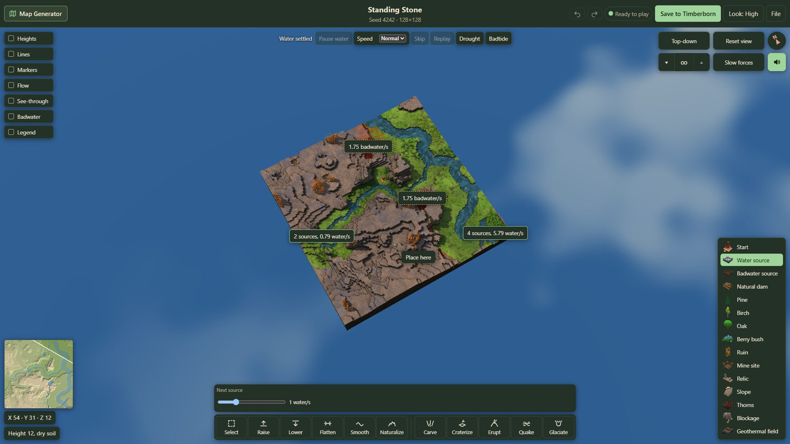

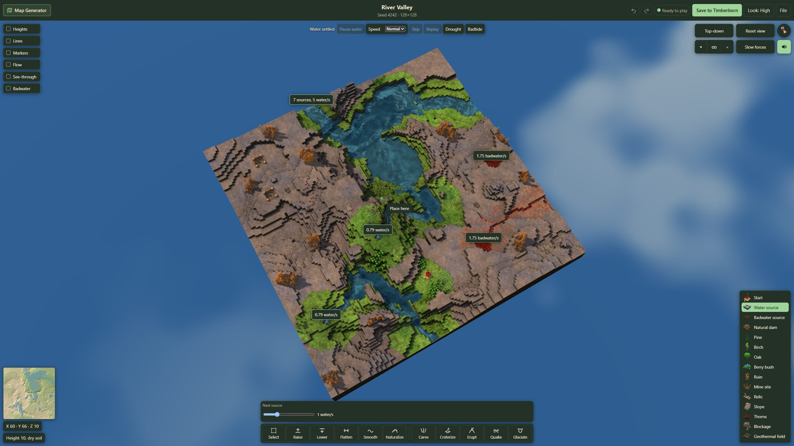

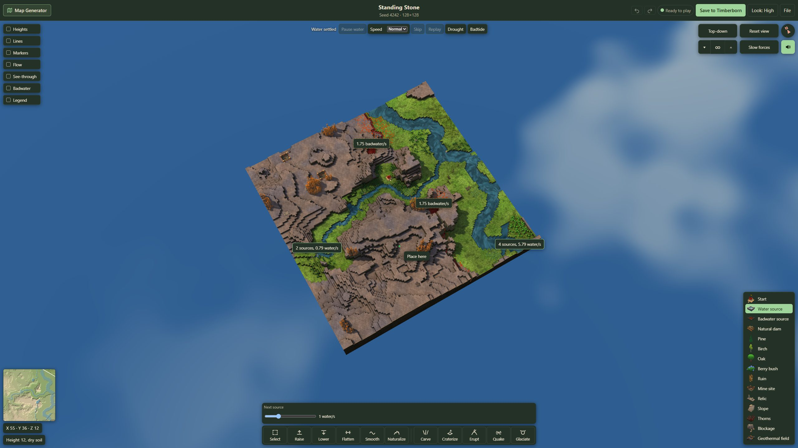
3. Legend ticked: the full legend under the Show column

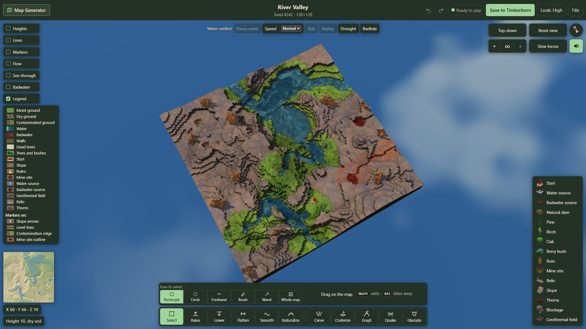

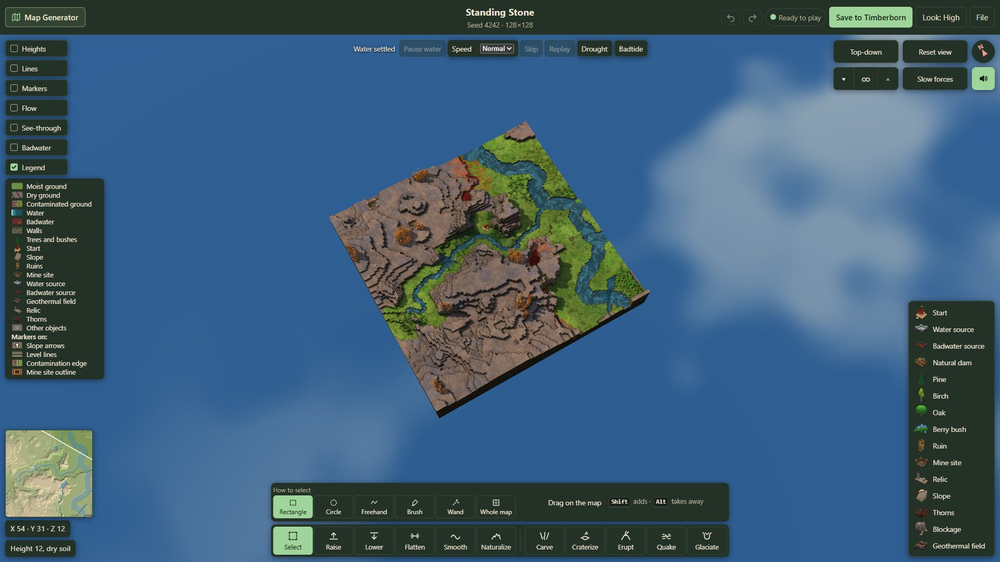

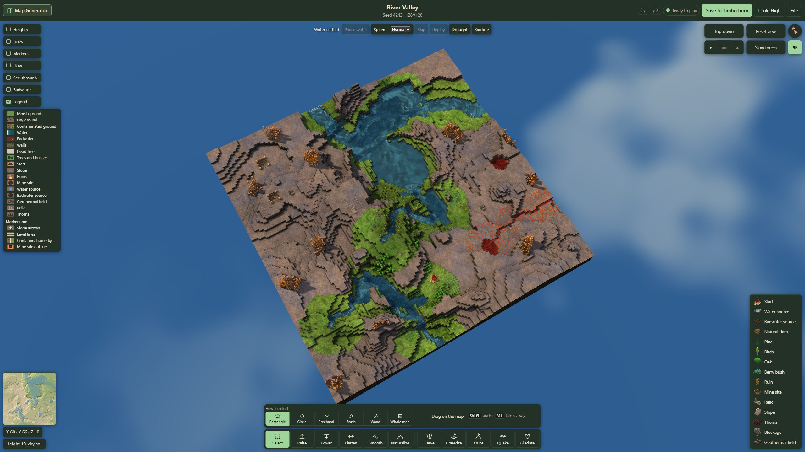

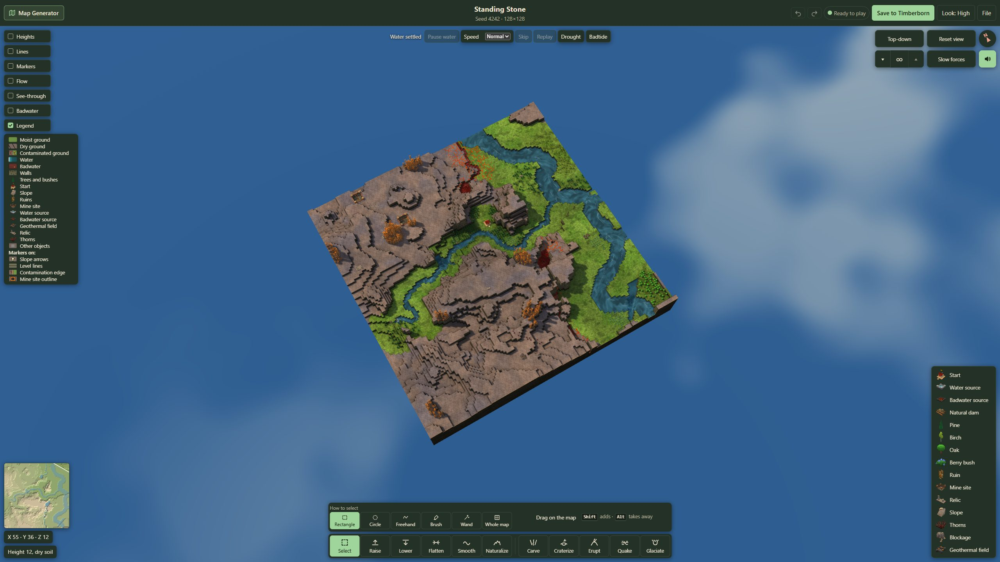